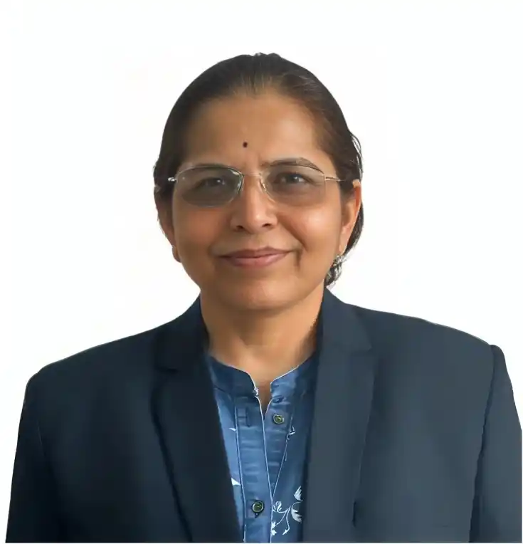

Assistant Professor, Department of Computer Science & Engineering
Affiliated with Pimpri Chinchwad University, Mohitewadi, Tal-Maval, Pune.
Qualifications: Ph.D in Computer Engineering,Bharati Vidyapeeth, Pune
Experience: 30+ years in academia and research, specializing in teaching undergraduate and postgraduate computer engineering courses.
Specialization: SEO, NLP, Data Science, Machine Learning
Membership:
Bio: I am a dedicated academic professional with a passion for teaching and technology. I enjoy mentoring students, participating in conferences, and contributing to educational innovation through research and continuous learning.
You can view and download my detailed Resume / CV here:
View CVYou can view the respective link:
Visit Orcid PageYou can view the respective link:
Visit Google Scholar PageEmail: lata.sankpal@pcu.edu.in
Website: www.ljsankpal.com